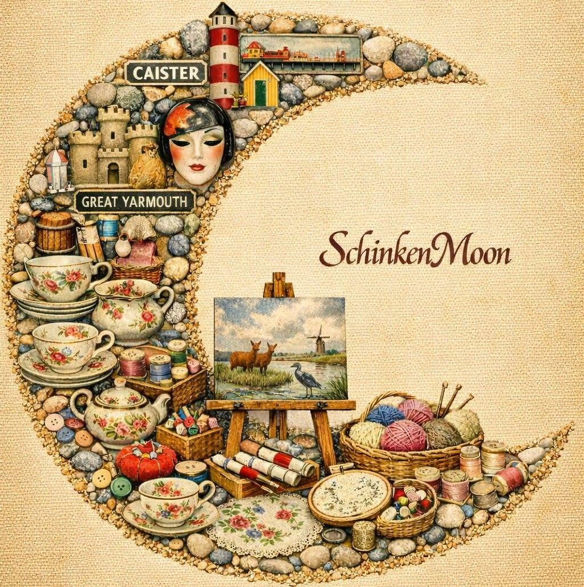

Caister Festival wouldn't be possible without the generous support of our sponsors. A huge thank you to everyone who helps make this community event happen.
Current Sponsors
Sponsor logos will appear here — more to be announced soon!

Support your community and get your business seen by hundreds of local families. Four tiers to suit every budget.
This exclusive sponsorship package places your business at the heart of an event enjoyed by thousands of local residents and visitors each year. It's an opportunity to showcase your business, support your community and play a leading role in helping Caister Festival continue to thrive.
Sponsor one of Caister Festival's key attractions. Our Area Sponsor package offers your business the opportunity to become the exclusive partner of a major festival area, placing your brand in front of thousands of visitors while demonstrating your commitment to supporting the local community.
Support one of the many features that help make Caister Festival a success. This package offers an excellent opportunity to promote your business while demonstrating your commitment to the local community.
Show your support for one of Caister's best-loved community events. Designed for small businesses and organisations, this package offers an affordable way to become part of the festival while gaining valuable recognition.
Download our sponsorship pack for the full breakdown of packages, benefits, and why Caister Festival is worth backing.
⬇ Download Sponsorship Pack (PDF)We'd be delighted to discuss bespoke sponsorship opportunities tailored to your business — sponsoring a specific attraction, activity, printed material, or another part of the festival. We also gladly accept monetary or equipment donations, and voluntary support.
Contact Us →